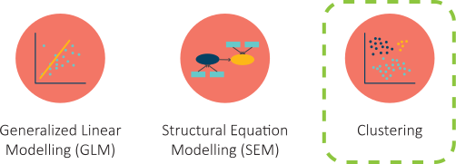
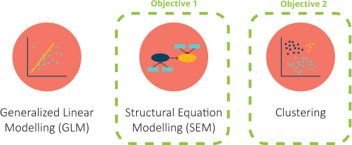
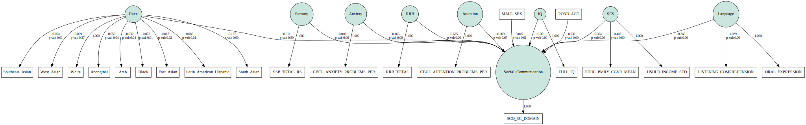
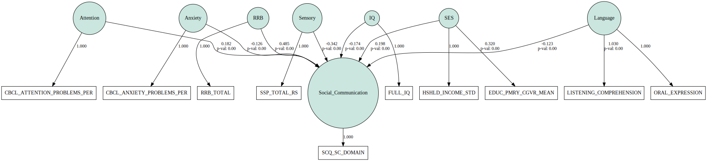

Investigating Determinants of Social Communication Deficits in Neurodevelopmental Disorders
Structural Equation Modeling Update
Jenny Nguyen


Recap of Last Meeting
Research Question
What is the differential contribution of demographics (sex, race/ethnicity, and socioeconomic status), IQ, sensory processing, attention, anxiety, language, and restricted, repetitive behaviours to social communication abilities in ASD, ADHD, and OCD?
Feedback from the Committee
- Factor and Variable selection: ensure that there is a strong theoretical model for the selection of variables
- Sample size concerns:
- request an updated POND export
- select variables with consideration for sample size
- combine measures when possible (e.g., language, anxiety, CBCL for different age groups)
- Alignment of objectives to methods: make sure that the objectives aligns to the research method you intend to use (i.e., SEM vs. clustering)
- Rethinking validation of clusters: consider the difference constructs that the ABAS and CBCL as social validation measures
Implementation of Changes
Re-selecting Factors
-
Qi, C. H., Kaiser, A. P., Marley, S. C. & Milan, S. Performance of African American Preschool Children From Low-Income Families on Expressive Language Measures. Top. Early Child. Spec. Educ. 32, 175–184 (2012).
-
Black, D., Wallace, G., Sokoloff, J. & Kenworthy, L. Brief Report: IQ Split Predicts Social Symptoms and Communication Abilities in High-Functioning Children with Autism Spectrum Disorders. J. Autism Dev. Disord. 39, 1613–1619 (2009).
-
Watson Linda R. et al. Differential Associations Between Sensory Response Patterns and Language, Social, and Communication Measures in Children With Autism or Other Developmental Disabilities. J. Speech Lang. Hear. Res. 54, 1562–1576 (2011).
-
Kerns, C. M. et al. Not to Be Overshadowed or Overlooked: Functional Impairments Associated With Comorbid Anxiety Disorders in Youth With ASD. Behav. Ther. 46, 29–39 (2015).
-
Freeth, M., Bullock, T. & Milne, E. The distribution of and relationship between autistic traits and social anxiety in a UK student population. AUTISM 17, 571–581 (2013).
-
Hirata, S. et al. Relationship between motor skill and social impairment in children with autism spectrum disorders. Int. J. Dev. Disabil. 60, 251–256 (2014).
-
Eigsti, I.-M. & Fein, D. A. More Is Less: Pitch Discrimination and Language Delays in Children with Optimal Outcomes from Autism. Autism Res. 6, 605–613 (2013).
-
Lam, K. S. L., Bodfish, J. W. & Piven, J. Evidence for three subtypes of repetitive behavior in autism that differ in familiality and association with other symptoms. J. Child Psychol. Psychiatry 49, 1193–1200 (2008). /p>
Reducing Variables
49 variables → 18 variables
Addressing Sample Size
n = 68 → n = 636
The following steps helped to improve sample size:
- Reducing the number of factors and variables
- Requesting the most up-to-date POND export
- Combining language measures (i.e., OWLS-I, OWLS-II, PLS-4, PLS-5)
- Combining CBCL 0-6 years and 6-18 years
- For anxiety, SPENCE and RCADS were combined, but missing data was still significant. We opted to use CBCL — Anxiety Problems instead
- Removed the need to apply a "threshold of missingness" to drop data
- OCD group was dropped because low sample size (n=17)
Aligning the Objectives to Methods
1Previously, we decided that the only feasible method to answer our two objectives was clustering based on time and sample size limitations.
The re-introduction of SEM methods allows us to properly quantify the differential contribution of the factors (objective 1) as well as identify subgroups through clustering (objective 2).
Generalized Equation Modelling (GLM)
Many of the commonly used statistical techniques (e.g., multivariate regression, ANOVA (a special case of regression), and canonical correlation) are based on the same mathematical model known as a general linear model (GLM) 1
PROS:
- Results are easier to interpret
- Straight forward implementation
CONS:
- Multi-regression can only predict a single outcome variable
- Issue of Collinearity
- Cannot model indirect relationship
Structural Equation Modelling (SEM)
SEM refers to a group of statistical procedures (e.g., Factor Analysis, Path Analysis) that give us insight relating to causal inference. 1
PROS:
- Theory-based approach
- Allows for the modelling of complex relationship
- Ability to model latent variables
CONS:
- Assumption of asymptomatic must be met
- Sample size must be sufficiently to model complex relationships
- Can lead to misleading results or non-convergences in the computation, resulting in unattainable parameter estimates
Clustering
Clustering is a form of unsupervised learning, where a group of data points is partitioned into groups that contain points as similar as possible. 1
PROS:
- Data-driven approach
- Handles multidimensional data well
- Allows for subgroup analysis (Objective 2)
CONS:
- Clustering results can be difficult to interpret
- Results are dependent on sample, prone to over-fitting
-
Kline, R. B. Principles and practice of structural equation modeling. (Guilford publications, 2015).
-
Aggarwal, C. C. & Reddy, C. K. Data clustering. Algorithms Appl. ChapmanHallCRC Data Min. Knowl. Discov. Ser. Londra (2014).
-
Blanthorne, C., Jones-Farmer, L. A. & Almer, E. D. Why you should consider SEM: A guide to getting started. 32.
Structural Equation Modeling (SEM)
Modeling Trimming Approach
- We have chosen to take a model-trimming approach, where we start with our initial hypothesized model, a model which includes the full set of features, to predict the 28-item SCQ total
- We progressively tweaked the model by trimming factors to iteratively improve the fit. The goal was to create a simplified model that met three attributes: it must align with the theory, be parsimonious (i.e., not overly complex and have good predictive power), and fit the data well.
- The χ2 difference test as well as goodness of fit was used to compare whether our alternative models fit significantly better or worse than our hypothesized models.
Full Model
Final Model
Item-level Analysis
Conclusions
- Consistent with previous literature, we found a significant effect of IQ, Sensory Profile, Anxiety, Attention, Language, RRBs and SES on social communication difficulties, with RRBs and sensory atypicalities (two core diagnostic symptoms of ASD) having the most pronounced association.
- Our item-level analysis also showed that RRBs and sensory atypicalities were significant factors for 27 out of 28 of the items. After correction for multiple comparisons, SES were not significant determinants of any of the items.
- Our findings are a preliminary step toward determining potentially personalized supports.
Next Steps
Next Steps
- Re-run SEM results using ABAS and CBCL social measures, keeping in mind comments about interpretation from committee
- Prepare and submit manuscript for SEM paper
- Apply supervised machine learning techniques (regression) to see which if these factors are predictive of SCQ score
- Conduct multi-view clustering analysis to determine subgroups